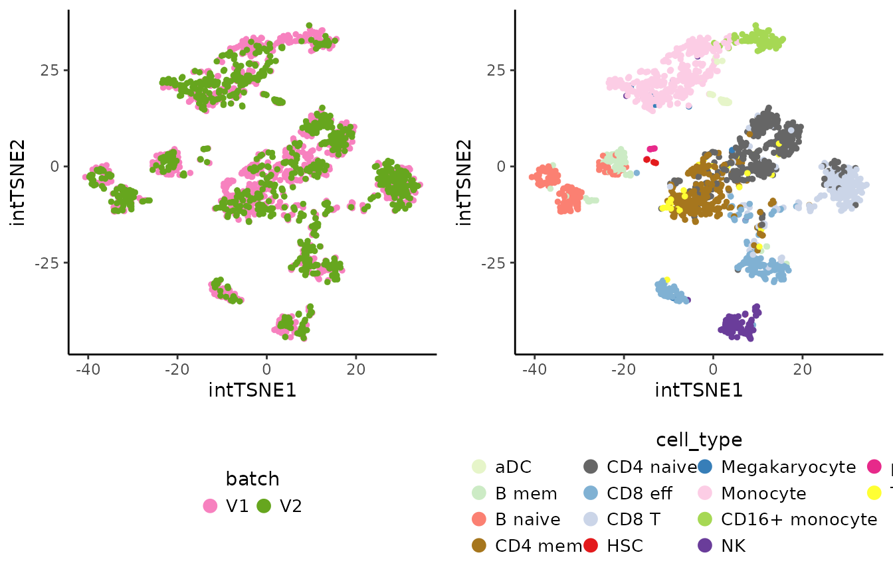
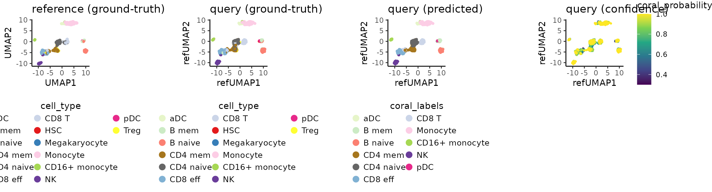

Integration
# Packages
library("SingleCellExperiment")
library("Coralysis")
if (!"scater" %in% installed.packages()) pak::pkg_install("scater")
library("scater")
library("ggplot2")
#library("scran")
#library("cowplot")
# Import data distributed with Coralysis
data.url <- "https://zenodo.org/records/14845751/files/pbmc_10Xassays.rds?download=1"
pbmc_10Xassays <- readRDS(file = url(data.url))Check how the data looks before integrating.
# Compute PCA & TSNE
set.seed(123)
pbmc_10Xassays <- RunPCA(object = pbmc_10Xassays, assay.name = "logcounts", p = 30, dimred.name = "unintPCA")
set.seed(123)
pbmc_10Xassays <- RunTSNE(pbmc_10Xassays, dimred.type = "unintPCA", dimred.name = "unintTSNE")
# Plot TSNE highlighting the batch & cell type
unint.batch.plot <- PlotDimRed(object = pbmc_10Xassays, color.by = "batch",
dimred = "unintTSNE", point.size = 0.01,
legend.nrow = 1, seed.color = 1024)
unint.cell.plot <- PlotDimRed(object = pbmc_10Xassays, color.by = "cell_type",
dimred = "unintTSNE", point.size = 0.01,
legend.nrow = 4, seed.color = 7)
cowplot::plot_grid(unint.batch.plot, unint.cell.plot, ncol = 2, align = "vh")Run integration with Coralysis. Provide the batch label
column name in colData(pbmc_10Xassays) to the parameter
batch.label.
# Perform integration with Coralysis
set.seed(1024)
pbmc_10Xassays <- RunParallelDivisiveICP(object = pbmc_10Xassays, batch.label = "batch", threads = 4)##
## Building training set...## Training set successfully built.##
## Computing cluster seed.##
## Initializing divisive ICP clustering...## | | | 0% | |= | 2% | |=== | 4% | |==== | 6% | |====== | 8% | |======= | 10% | |========= | 12% | |========== | 14% | |=========== | 16% | |============= | 18% | |============== | 20% | |================ | 22% | |================= | 24% | |=================== | 27% | |==================== | 29% | |===================== | 31% | |======================= | 33% | |======================== | 35% | |========================== | 37% | |=========================== | 39% | |============================= | 41% | |============================== | 43% | |=============================== | 45% | |================================= | 47% | |================================== | 49% | |==================================== | 51% | |===================================== | 53% | |======================================= | 55% | |======================================== | 57% | |========================================= | 59% | |=========================================== | 61% | |============================================ | 63% | |============================================== | 65% | |=============================================== | 67% | |================================================= | 69% | |================================================== | 71% | |=================================================== | 73% | |===================================================== | 76% | |====================================================== | 78% | |======================================================== | 80% | |========================================================= | 82% | |=========================================================== | 84% | |============================================================ | 86% | |============================================================= | 88% | |=============================================================== | 90% | |================================================================ | 92% | |================================================================== | 94% | |=================================================================== | 96% | |===================================================================== | 98% | |======================================================================| 100%##
## Divisive ICP clustering completed successfully.##
## Predicting cell cluster probabilities using ICP models...## Prediction of cell cluster probabilities completed successfully.##
## Multi-level integration completed successfully.
# Compute PCA with joint cluster probabilities & TSNE
set.seed(123)
pbmc_10Xassays <- RunPCA(pbmc_10Xassays, assay.name = "joint.probability", dimred.name = "intPCA")## Divisive ICP: selecting ICP tables multiple of 4
set.seed(123)
pbmc_10Xassays <- RunTSNE(pbmc_10Xassays, dimred.type = "intPCA", dimred.name = "intTSNE")
# Plot TSNE highlighting the batch & cell type
int.batch.plot <- PlotDimRed(object = pbmc_10Xassays, color.by = "batch",
dimred = "intTSNE", point.size = 0.01,
legend.nrow = 1, seed.color = 1024)
int.cell.plot <- PlotDimRed(object = pbmc_10Xassays, color.by = "cell_type",
dimred = "intTSNE", point.size = 0.01,
legend.nrow = 4, seed.color = 7)
cowplot::plot_grid(int.batch.plot, int.cell.plot, ncol = 2, align = "vh")
Graph-based clustering on the integrated PCA
# Graph-based clustering on the integrated PCA w/ 'scran' package
set.seed(123)
pbmc_10Xassays$cluster <- scran::clusterCells(pbmc_10Xassays, use.dimred = "intPCA",
BLUSPARAM = bluster::SNNGraphParam(k = 15, cluster.fun = "louvain"))
# Plot clustering
clt.plot <- PlotDimRed(object = pbmc_10Xassays, color.by = "cluster", dimred = "intTSNE",
point.size = 0.01, legend.nrow = 3, seed.color = 65)
cowplot::plot_grid(int.batch.plot, int.cell.plot, clt.plot, ncol = 3, align = "h")Cluster markers
# Cluster markers
cluster.markers <- FindAllClusterMarkers(object = pbmc_10Xassays, clustering.label = "cluster")## -----------------------------------
## testing cluster 1
## 1123 features left after min.pct filtering
## 1123 features left after min.diff.pct filtering
## 219 features left after log2fc.threshold filtering
## -----------------------------------
## -----------------------------------
## testing cluster 2
## 1214 features left after min.pct filtering
## 1214 features left after min.diff.pct filtering
## 285 features left after log2fc.threshold filtering
## -----------------------------------
## -----------------------------------
## testing cluster 3
## 1192 features left after min.pct filtering
## 1192 features left after min.diff.pct filtering
## 461 features left after log2fc.threshold filtering
## -----------------------------------
## -----------------------------------
## testing cluster 4
## 1130 features left after min.pct filtering
## 1130 features left after min.diff.pct filtering
## 407 features left after log2fc.threshold filtering
## -----------------------------------
## -----------------------------------
## testing cluster 5
## 1187 features left after min.pct filtering
## 1187 features left after min.diff.pct filtering
## 286 features left after log2fc.threshold filtering
## -----------------------------------
## -----------------------------------
## testing cluster 6
## 1127 features left after min.pct filtering
## 1127 features left after min.diff.pct filtering
## 293 features left after log2fc.threshold filtering
## -----------------------------------
## -----------------------------------
## testing cluster 7
## 1179 features left after min.pct filtering
## 1179 features left after min.diff.pct filtering
## 188 features left after log2fc.threshold filtering
## -----------------------------------
## -----------------------------------
## testing cluster 8
## 1158 features left after min.pct filtering
## 1158 features left after min.diff.pct filtering
## 390 features left after log2fc.threshold filtering
## -----------------------------------
## -----------------------------------
## testing cluster 9
## 1243 features left after min.pct filtering
## 1243 features left after min.diff.pct filtering
## 358 features left after log2fc.threshold filtering
## -----------------------------------
## -----------------------------------
## testing cluster 10
## 1468 features left after min.pct filtering
## 1468 features left after min.diff.pct filtering
## 361 features left after log2fc.threshold filtering
## -----------------------------------
## -----------------------------------
## testing cluster 11
## 1153 features left after min.pct filtering
## 1153 features left after min.diff.pct filtering
## 280 features left after log2fc.threshold filtering
## -----------------------------------
## -----------------------------------
## testing cluster 12
## 1227 features left after min.pct filtering
## 1227 features left after min.diff.pct filtering
## 345 features left after log2fc.threshold filtering
## -----------------------------------
# Select the top 3 positive markers per cluster
top3.markers <- lapply(X = split(x = cluster.markers, f = cluster.markers$cluster), FUN = function(x) {
head(x[order(x$log2FC, decreasing = TRUE),], n = 3)
})
top3.markers <- do.call(rbind, top3.markers)
top3.markers <- top3.markers[order(as.numeric(top3.markers$cluster)),]
# Heatmap of the top 3 positive markers per cluster
HeatmapFeatures(object = pbmc_10Xassays, clustering.label = "cluster",
features = top3.markers$marker)
DGE
Coralysis was able to separate the CD8 effector T cells
into two clusters: 7 and 10. From the differential expression analysis
below, it is clear that cluster 10 is more cytotoxic and similar to NK
cells than cluster 7.
# DGE analysis: cluster 7 vs 10
dge.clt7vs10 <- FindClusterMarkers(pbmc_10Xassays, clustering.label = "cluster",
clusters.1 = "7", clusters.2 = "10")## testing cluster group.1
## 1524 features left after min.pct filtering
## 1524 features left after min.diff.pct filtering
## 501 features left after log2fc.threshold filtering## p.value adj.p.value log2FC pct.1 pct.2 diff.pct marker
## HLA-DRA 2.874624e-21 5.749247e-18 -4.225185 0.3738739 1 0.6261261 HLA-DRA
## LYZ 1.453544e-20 2.907089e-17 -4.093886 0.4144144 1 0.5855856 LYZ
## CST3 1.093791e-23 2.187581e-20 -3.948165 0.2792793 1 0.7207207 CST3
## HLA-DRB1 1.842245e-21 3.684491e-18 -3.555898 0.3648649 1 0.6351351 HLA-DRB1
## HLA-DPA1 5.028899e-21 1.005780e-17 -3.335846 0.3873874 1 0.6126126 HLA-DPA1
## HLA-DPB1 4.226334e-20 8.452668e-17 -3.316433 0.4459459 1 0.5540541 HLA-DPB1
top6.degs <- head(dge.clt7vs10[order(abs(dge.clt7vs10$log2FC), decreasing = TRUE),"marker"])
exp.plots <- lapply(X = top6.degs, FUN = function(x) {
PlotExpression(object = pbmc_10Xassays, color.by = x, scale.values = TRUE, point.size = 0.5, point.stroke = 0.5)
})
cowplot::plot_grid(plotlist = exp.plots, align = "vh", ncol = 6)Reference-mapping
Perform reference-mapping with Coralysis,
## Reference-mapping
# Split the SCE object by 'batch'
reducedDims(pbmc_10Xassays) <- list() # remove dimensional reductions
ref <- pbmc_10Xassays[,pbmc_10Xassays$batch=="V2"] # let V2 assay batch be the reference data set
query <- pbmc_10Xassays[,pbmc_10Xassays$batch=="V1"] # let V1 be the query (unknown annotations)
# 1) Train the reference
set.seed(123)
ref <- RunParallelDivisiveICP(object = ref, divisive.method = "cluster",
threads = 4) # runs without 'batch.label' as it represents 1 sample only##
## Building training set...## Training set successfully built.##
## Computing cluster seed.##
## Initializing divisive ICP clustering...## | | | 0% | |= | 2% | |=== | 4% | |==== | 6% | |====== | 8% | |======= | 10% | |========= | 12% | |========== | 14% | |=========== | 16% | |============= | 18% | |============== | 20% | |================ | 22% | |================= | 24% | |=================== | 27% | |==================== | 29% | |===================== | 31% | |======================= | 33% | |======================== | 35% | |========================== | 37% | |=========================== | 39% | |============================= | 41% | |============================== | 43% | |=============================== | 45% | |================================= | 47% | |================================== | 49% | |==================================== | 51% | |===================================== | 53% | |======================================= | 55% | |======================================== | 57% | |========================================= | 59% | |=========================================== | 61% | |============================================ | 63% | |============================================== | 65% | |=============================================== | 67% | |================================================= | 69% | |================================================== | 71% | |=================================================== | 73% | |===================================================== | 76% | |====================================================== | 78% | |======================================================== | 80% | |========================================================= | 82% | |=========================================================== | 84% | |============================================================ | 86% | |============================================================= | 88% | |=============================================================== | 90% | |================================================================ | 92% | |================================================================== | 94% | |=================================================================== | 96% | |===================================================================== | 98% | |======================================================================| 100%##
## Divisive ICP clustering completed successfully.##
## Predicting cell cluster probabilities using ICP models...## Prediction of cell cluster probabilities completed successfully.##
## Multi-level integration completed successfully.
# 2) Compute reference PCA & UMAP
ref <- RunPCA(ref, return.model = TRUE, pca.method = "stats")## Divisive ICP: selecting ICP tables multiple of 4
set.seed(123)
ref <- RunUMAP(ref, return.model = TRUE)
# 3) Project & predict query cell labels
set.seed(1024)
map <- ReferenceMapping(ref = ref, query = query, ref.label = "cell_type",
project.umap = TRUE, dimred.name.prefix = "ref")
# Calculate accuracy
preds_x_truth <- table(map$coral_labels, map$cell_type)
preds_x_truth##
## aDC B mem B naive CD4 mem CD4 naive CD8 eff CD8 T HSC
## aDC 14 0 0 0 0 0 0 0
## B mem 0 39 17 0 0 0 0 4
## B naive 0 5 68 0 0 0 0 0
## CD4 mem 0 0 0 105 41 2 4 0
## CD4 naive 0 0 0 17 150 0 12 1
## CD8 eff 0 1 0 2 0 93 2 0
## CD8 T 0 0 0 4 5 13 64 0
## HSC 0 0 0 0 0 0 0 0
## Megakaryocyte 0 0 0 0 0 0 0 0
## Monocyte 1 0 0 0 0 0 0 0
## CD16+ monocyte 0 0 0 0 0 0 0 0
## NK 0 0 0 0 0 0 0 0
## pDC 0 0 0 0 0 0 0 0
## Treg 0 0 0 0 0 0 0 0
##
## Megakaryocyte Monocyte CD16+ monocyte NK pDC Treg
## aDC 0 0 0 0 0 0
## B mem 0 0 0 0 0 0
## B naive 0 0 0 0 0 0
## CD4 mem 0 0 0 0 0 7
## CD4 naive 0 0 0 0 0 7
## CD8 eff 1 0 0 1 0 0
## CD8 T 1 0 0 0 0 1
## HSC 0 0 0 0 0 0
## Megakaryocyte 0 0 0 0 0 0
## Monocyte 3 174 4 1 0 0
## CD16+ monocyte 1 4 72 0 0 0
## NK 0 0 0 55 0 0
## pDC 0 0 0 0 4 0
## Treg 0 0 0 0 0 0## [1] 0.838
# Plot query and reference UMAP side-by-side with ground-truth & predicted cell labels
use.color <- c("aDC" = "#E6F5C9", "B mem" = "#CCEBC5", "B naive" = "#FB8072",
"CD4 mem" = "#A6761D", "CD4 naive" = "#666666", "CD8 eff" = "#80B1D3",
"CD8 T" = "#CBD5E8", "HSC" = "#E31A1C", "Megakaryocyte" = "#377EB8",
"Monocyte" = "#FCCDE5", "CD16+ monocyte" = "#A6D854", "NK" = "#6A3D9A",
"pDC" = "#E7298A", "Treg" = "#FFFF33")
ref.celltype.plot <- PlotDimRed(object = ref, color.by = "cell_type", dimred = "UMAP", point.size = 0.01,
legend.nrow = 6, seed.color = 7) + ggtitle("reference (ground-truth)")
query.ground_truth.plot <- PlotDimRed(object = map, color.by = "cell_type", dimred = "refUMAP", point.size = 0.01,
legend.nrow = 6, seed.color = 7) + ggtitle("query (ground-truth)")
query.predicted.plot <-PlotDimRed(object = map, color.by = "coral_labels", dimred = "refUMAP", point.size = 0.01,
legend.nrow = 6, use.color = use.color) + ggtitle("query (predicted)")
query.confidence.plot <- PlotExpression(object = map, color.by = "coral_probability", dimred = "refUMAP", point.size = 0.01,
color.scale = "viridis") + ggtitle("query (confidence)")
cowplot::plot_grid(ref.celltype.plot, query.ground_truth.plot, query.predicted.plot, query.confidence.plot,
ncol = 4, align = "vh")
# R session
sessionInfo()## R version 4.4.2 (2024-10-31)
## Platform: x86_64-pc-linux-gnu
## Running under: Ubuntu 24.04.1 LTS
##
## Matrix products: default
## BLAS: /usr/lib/x86_64-linux-gnu/openblas-pthread/libblas.so.3
## LAPACK: /usr/lib/x86_64-linux-gnu/openblas-pthread/libopenblasp-r0.3.26.so; LAPACK version 3.12.0
##
## locale:
## [1] LC_CTYPE=C.UTF-8 LC_NUMERIC=C LC_TIME=C.UTF-8
## [4] LC_COLLATE=C.UTF-8 LC_MONETARY=C.UTF-8 LC_MESSAGES=C.UTF-8
## [7] LC_PAPER=C.UTF-8 LC_NAME=C LC_ADDRESS=C
## [10] LC_TELEPHONE=C LC_MEASUREMENT=C.UTF-8 LC_IDENTIFICATION=C
##
## time zone: UTC
## tzcode source: system (glibc)
##
## attached base packages:
## [1] stats4 stats graphics grDevices utils datasets methods
## [8] base
##
## other attached packages:
## [1] scater_1.34.0 ggplot2_3.5.1
## [3] scuttle_1.16.0 Coralysis_1.0.0
## [5] SingleCellExperiment_1.28.1 SummarizedExperiment_1.36.0
## [7] Biobase_2.66.0 GenomicRanges_1.58.0
## [9] GenomeInfoDb_1.42.3 IRanges_2.40.1
## [11] S4Vectors_0.44.0 BiocGenerics_0.52.0
## [13] MatrixGenerics_1.18.1 matrixStats_1.5.0
##
## loaded via a namespace (and not attached):
## [1] gridExtra_2.3 rlang_1.1.5 magrittr_2.0.3
## [4] flexclust_1.4-2 compiler_4.4.2 png_0.1-8
## [7] systemfonts_1.2.1 vctrs_0.6.5 reshape2_1.4.4
## [10] stringr_1.5.1 pkgconfig_2.0.3 crayon_1.5.3
## [13] fastmap_1.2.0 XVector_0.46.0 labeling_0.4.3
## [16] rmarkdown_2.29 ggbeeswarm_0.7.2 UCSC.utils_1.2.0
## [19] ragg_1.3.3 xfun_0.50 modeltools_0.2-23
## [22] bluster_1.16.0 zlibbioc_1.52.0 cachem_1.1.0
## [25] beachmat_2.22.0 jsonlite_1.8.9 pak_0.8.0
## [28] DelayedArray_0.32.0 BiocParallel_1.40.0 irlba_2.3.5.1
## [31] parallel_4.4.2 aricode_1.0.3 cluster_2.1.6
## [34] R6_2.5.1 bslib_0.9.0 stringi_1.8.4
## [37] RColorBrewer_1.1-3 reticulate_1.40.0 limma_3.62.2
## [40] jquerylib_0.1.4 Rcpp_1.0.14 iterators_1.0.14
## [43] knitr_1.49 snow_0.4-4 Matrix_1.7-1
## [46] igraph_2.1.4 tidyselect_1.2.1 viridis_0.6.5
## [49] abind_1.4-8 yaml_2.3.10 codetools_0.2-20
## [52] doRNG_1.8.6.1 lattice_0.22-6 tibble_3.2.1
## [55] plyr_1.8.9 withr_3.0.2 askpass_1.2.1
## [58] ggrastr_1.0.2 Rtsne_0.17 evaluate_1.0.3
## [61] desc_1.4.3 pillar_1.10.1 rngtools_1.5.2
## [64] foreach_1.5.2 generics_0.1.3 sparseMatrixStats_1.18.0
## [67] munsell_0.5.1 scales_1.3.0 class_7.3-22
## [70] glue_1.8.0 metapod_1.14.0 pheatmap_1.0.12
## [73] LiblineaR_2.10-24 tools_4.4.2 BiocNeighbors_2.0.1
## [76] ScaledMatrix_1.14.0 SparseM_1.84-2 RSpectra_0.16-2
## [79] locfit_1.5-9.11 RANN_2.6.2 fs_1.6.5
## [82] scran_1.34.0 Cairo_1.6-2 cowplot_1.1.3
## [85] grid_4.4.2 umap_0.2.10.0 edgeR_4.4.2
## [88] colorspace_2.1-1 GenomeInfoDbData_1.2.13 beeswarm_0.4.0
## [91] BiocSingular_1.22.0 vipor_0.4.7 cli_3.6.3
## [94] rsvd_1.0.5 textshaping_1.0.0 viridisLite_0.4.2
## [97] S4Arrays_1.6.0 dplyr_1.1.4 doSNOW_1.0.20
## [100] gtable_0.3.6 sass_0.4.9 digest_0.6.37
## [103] ggrepel_0.9.6 SparseArray_1.6.1 dqrng_0.4.1
## [106] farver_2.1.2 htmltools_0.5.8.1 pkgdown_2.1.1
## [109] lifecycle_1.0.4 httr_1.4.7 statmod_1.5.0
## [112] openssl_2.3.2